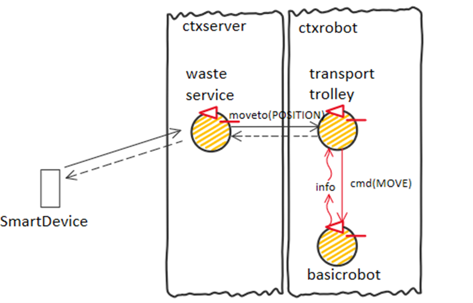
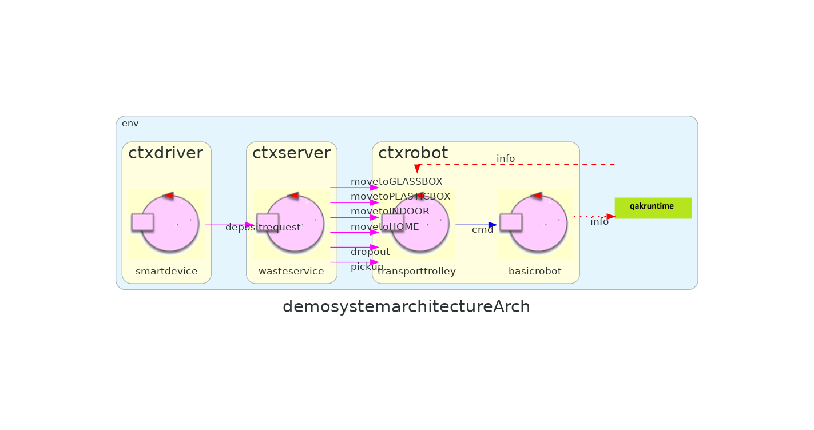
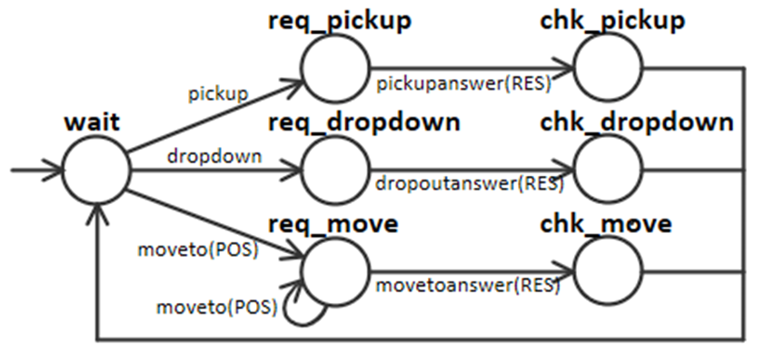
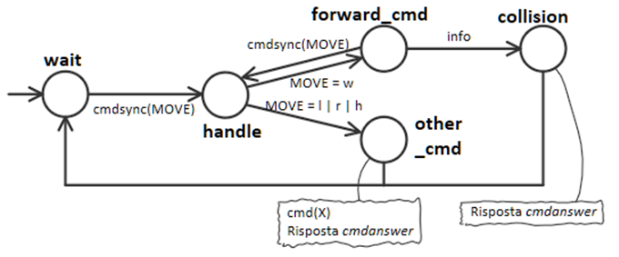
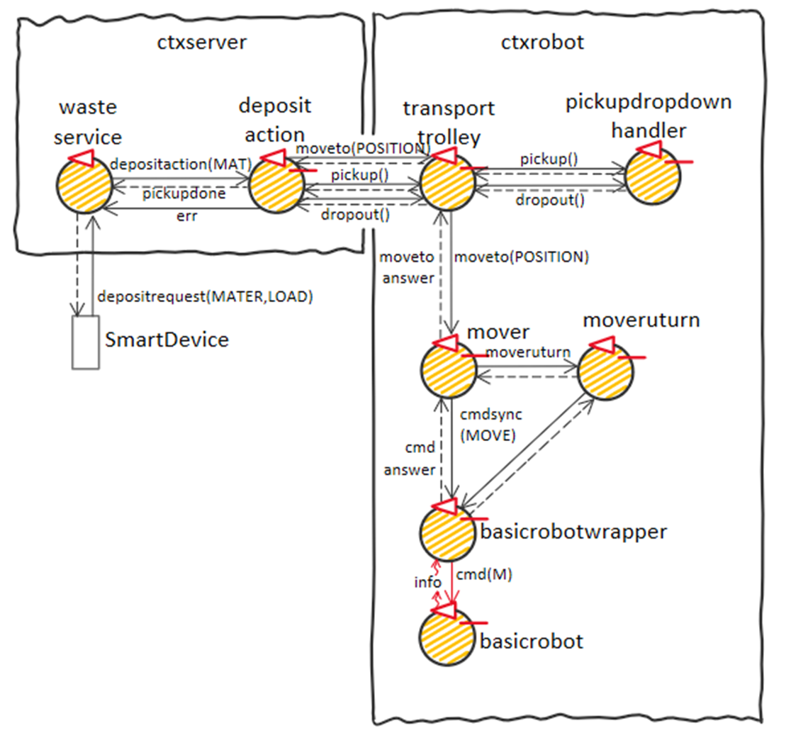
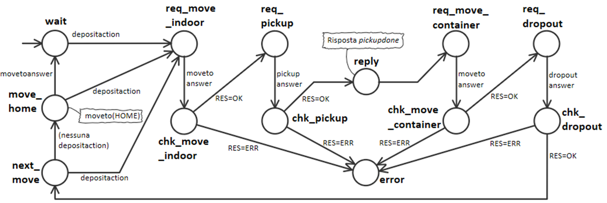

Introduction
Progetto finale di ISS, che consiste in un impianto di smistamento dei rifiuti nel quale un robot deve trasportare il materiale dal camion al relativo container
Requirements
Requirement analysis
Scrum Goal and Work Plan
Scrum goal:
Obiettivo dello SPRINT1 è la creazione di una prima demo (su ambiente virtuale) che tenga presente dei soli punti 1 e 2 specificati dal committente, siccome sono i punti principali che contengono la core business logic del problema (descrivono infatti la Service area e le Deposit action)
Piano di lavoro:
- Analisi del problema di come affrontare la navigazione, anche in relazione al SW già sviluppato
(possibile visitare la pagina riassuntiva Applicazioni22 dei moduli sviluppati) - Analisi delle responsabilità e delle interazioni tra i componenti wasteservice, trasporttrolley e basicrobot
- Sviluppo / adattamento di tali componenti
- Realizzazione di un modello eseguibile (a tal proposito verrà utilizzato il metamodello QAK).
- Realizzazione di un (più completo) test-plan per il modello
Problem analysis
Architettura logica precedente:
Wasteservice
Quando rispondere allo Smart device?
Siccome i requisiti aggiuntivi dicono che sarebbe bene mandare via il Waste-truck appena possibile, se una richiesta può essere soddisfatta il driver deve essere liberato subito dopo il Pickup (inviando allo Smart device una loadaccept). Se invece la richiesta effettuata non può essere soddisfatta, è bene rispondere immediatamente con una loadrejected (qualunque cosa stia facendo il robot in quel momento).
Transport trolley
DDR robot vs Transport trolley:
-
Il termine "DDR - Differential Drive Robot" rappresenta la tecnologia con la quale il robot si muove. Il DDR robot è quindi una entità di basso livello che riceve comandi base come "avanti", "destra", "sinistra", "halt", ecc..
Possiamo quindi identificare il DDR robot come l'attore QAK basicrobot presente in unibo.basicRobot22, che infatti riceve comandi://MOVE = w | a | s | d | h | l | r Dispatch cmd : cmd(MOVE)
-
Invece il Transport trolley è concepita come entità astratta di più alto livello che si occuperà di ricevere la destinazione generica
//POSITION = INDOOR | PLASTICBOX | GLASSBOX | HOME Request moveto : moveto(POSITION) Reply movetoanswer : movetoanswer(RESULT)
Possibile una separazione dei due concetti:
La relazione che esiste tra WasteService e Transport trolley è quindi di tipo "use".
Questa separazione in due layer rende il sistema più resistente ad eventuali future variazioni della tecnologia utilizzata per il robot (movimento a step con coordinate o meno, tipologia di hardware del robot). Il WasteService continuerà ad inviare al Transport trolley gli stessi comandi astratti, senza preoccuparsi di "in che modo" o "con quali mezzi" la destinazione viene raggiunta.
Dove collocare Transport trolley:
Risulta concettualmente sensato porre Transport trolley nello stesso contesto di basicrobot.Transport trolley potrebbe infatti necessitare di cambiamenti nel caso in cui cambi il DDR Robot e la tecnologia di movimento usata.
Si noti tuttavia che, qualora tale componente debba fare utilizzo di un planner (che effettua una ricerca nello spazio degli stati), allora si dovrebbe considerare la possibilità di porre tale attore su un nodo computazionale più potente, dove il consumo di potenza non è un problema (mentre si presume che il robot sia alimentato a batteria).
Alla luce delle osservazioni sinora fatte, l'architettura logica attuale è la seguente: 
Operazioni eseguite dal Transport trolley:
Per questioni di flessibilità, sarebbe opportuno comandare al Transport trolley separatamente le operazioni di carico, scarico e movimento.
In questo modo se dovesse cambiare il processo di smistamento basterà modificare la sequenza di comandi che vengono impartiti al Transport trolley, senza bisogno di
modificare quest'ultimo. Inoltre si ritiene corretto far gestire al Transport trolley le operazioni di Pickup e Dropout, siccome un domani potrebbe esser
necessario inviare comandi o segnali a HW presente sul robot per compiere queste azioni.
Le interazioni con il Transport trolley dovrebbero essere di tipo request-response sincrone bloccanti.
Tuttavia, solo per il comando moveto(POSITION), dovrà essere possibile comandare una nuova destinazione anche se quella precedente non era stata ancora raggiunta (annullando di fatto la moveto precedente)
Questo perchè è possibile che arrivi un nuovo Waste-truck mentre il Transport trolley sta tornando ad HOME. In questo modo è possibile la gestione immediata
della nuova richiesta senza aspettare che il Transport trolley raggiunga HOME.
L'interfaccia del transporttrolley risulta quindi essere la seguente:
//POSITION = INDOOR | PLASTICBOX | GLASSBOX | HOME
//RESULT = OK | ERROR
Request moveto : moveto(POSITION) //INDOOR | PLASTICBOX | GLASSBOX | HOME
Reply movetoanswer : movetoanswer(RESULT)
Request pickup : pickup(_)
Reply pickupanswer : pickupanswer(RESULT)
Request dropout : dropout(_)
Reply dropoutanswer : dropoutanswer(RESULT)
Il problema della navigazione:
Uso di un sistema di coordinate o boundary walker che raggiunge gli angoli rilevando il contatto con i muri?
La particolare collocazione delle zone INDOOR, PLASTICBOX, GLASSBOX, HOME e la presenza di un sonar o sensore di impatto sul robot rendono attuabile una
soluzione che non richiede l'utilizzo di coordinate:
il robot può infatti muoversi all'interno della Service area lungo le pareti, orientandosi semplicemente rilevando le collisioni con le pareti.
In questa sezione analizziamo i punti a favore dell'utilizzo di un sistema a coordinate e uno senza coordinate:
I vantaggi nell'utilizzo di un sistema a coordinate:
- Maggiore flessibilità. Ad esempio nel caso in cui la posizione dei siti non sia più negli angoli, o il robot debba seguire un percorso ottimo, o se ci sono ostacoli nella Service area, ecc... .
- Potenziale riuso di moduli che già abbiamo sviluppato (mapper, planner)
I vantaggi nell'utilizzo di un sistema senza coordinate:
- Minor complessità, minor costo
- Maggior velocità negli spostamenti, e maggior velocità di reazione a comandi di halt mentre ci si muove in avanti (non si deve aspettare di aver terminato uno step)
- Possibile miglior reazione da parte di robot reali che non fanno uso di sistemi in feedback o altro hardware per controllare meglio i propri spostamenti:
L'errore potrebbe aumentare ad ogni singolo step, mentre la prima soluzione (siccome utilizza un sensore di contatto con il muro) non soffre di questo problema
Per scegliere in merito ad una decisione così importante, sono state analizzate diverse opzioni, che vengono descritte in
grid_or_boundary_analysis.html
Come riportato nel relativo documento, optiamo per l'utilizzo di una soluzione senza utilizzo di coordinate, facendo solamente uso di una FSM
Riassunto situazione attuale:
Architettura logica:
QAK
Modello del sistema QAKPrimo metamodello QAK wasteservice (= a sprint0)
Primo metamodello QAK transporttrolley
Testplan:
TestWasteservice.kt (= a sprint0)
TestTransporttrolley.kt
Project
Procediamo con lo sviluppo vero e proprio dei componenti. Essi sono tutti presenti nel file QAK di questo sprint, ma vengono qui riportate e spiegate le macchine a stati che li implementano.
Transport trolley
Iniziamo con il Transport trolley, uno dei punti di maggior interesse nell'ambito di questo sprint.
Come evidenziato in analisi del problema, è opportuno poter comandare al Transport trolley separatamente le operazioni di carico, scarico e movimento.
Allo stesso tempo sarebbe però bene mantenere separate la parte che implementa la navigazione del robot verso la prossima destinazione dalla parte che implementa le azioni di
Pickup e Dropout. Per questo motivo si è scelto di far sì che il trasporttrolley funga da semplice "dispatcher" di comandi verso 2 componenti che si occupano
separatamente di implementare separatamente i due aspetti prima citati:
-
Attore pickupdropouthandler per implementare le operazioni di Pickup e Dropout. Interfaccia:
//RESULT = OK | ERROR Request pickup : pickup(_) Reply pickupanswer : pickupanswer(RESULT) Request dropout : dropout(_) Reply dropoutanswer : dropoutanswer(RESULT)
-
Attore mover per implementare la logica di navigazione del robot verso la prossima destinazione. Interfaccia:
//POSITION = INDOOR | PLASTICBOX | GLASSBOX | HOME Request move : move(POSITION) Reply moveanswer : moveanswer(RESULT)
Inoltre, al fine di uniformare i comandi che vengono inviati verso il robot, è utile introdurre un "wrapper" al basicrobot che esponga solo comandi sincroni bloccanti all'esterno.
In particolare il wrapper si occupa di rispondere al comando di andata avanti solo quando si vede arrivare l'evento info da basicrobot.
Basicrobotwrapper riceverà e risponderà con messaggi del tipo:
//RESULT = OK | ERROR
//MOVE = w | l | r | h
Request cmdsync : cmdsync(MOVE)
Reply cmdanswer : cmdanswer(RESULT)
La scelta di introdurre questo componente potrebbe poi rilevarsi strategica per la gestione dell'halt quando la distanza misurata dal Sonar è ≤ DLIMT.
Potremmo infatti introdurre a questo livello due operazioni che bloccano e fanno riprendere al robot la mossa attualmente in esecuzione, il tutto in maniera trasparente ai
componenti di più alto livello. Esploreremo meglio questa opportunità negli sprint successivi.
L'architettura diventa quindi come segue:
Visitiamo ora nel dettaglio le implementazioni dei nuovi componenti:
trasporttrolley
Come anticipato, si tratta di un semplice dispatcher di comandi. Si noti come per l'operazione di move sia possibile comandare una nuova move(POS) senza che la precedente sia necessariamente terminata.
mover
Siccome lo sviluppo di questo componente risulta essere piuttosto denso e articolato, viene trattato separatamente in una pagina a parte:
pickupdropouthandler
Si tratta di un componente il cui compito è semplicemente quello di contenere le routine di gestione delle operazioni di Pickup e Dropout (che attualmente consistono semplicemente in delle delay).
basicrobotwrapper
Un semplice wrapper che permette di comandare il robot facendo uso di semplici comandi sincroni bloccanti. Per il comando di andata avanti (cmdsync(w)) la risposta viene ricevuta dopo aver rilevato l'impatto con il muro (evento info). È anche possibile interrompere l'andata avanti per inviare un altro comando (necessario per fare inversione ad U)
WasteService
Il WasteService contiene buona parte della business logic del sistema. Possiamo identificare due "macro-parti" di questo servizio, che abbiamo diviso in 2 distinti attori:
- La prima è quella che si occupa di ricevere le richieste, vedere se è possibile prendere in carico il materiale e mantenere aggiornati i volumi presenti all'interno dei container (di questo se ne occupa l'attore wasteservice)
- La seconda è quella che invia i comandi per effettuare la Deposit action (compito delegato all'attore depositaction).
Architettura:
Viene riportato il diagramma degli stati di wasteservice e depositaction.
wasteservice

Wasteservice rimane in attesa di nuove richieste quando è nello stato wait. Quando arriva la prima richiesta si decide se viene accettata o meno (stato handle_req). Se viene
accettata si richiede all'attore depositaction di effettuare l'operazione (stato req_depositaction) e si attende la risposta pickupdone. Il truck riceve la loadaccept
subito dopo il completamento del Pickup (stato chk_depositaction).
Se invece (nello stato chk_depositaction) ci si rende conto che non c'è spazio, il truck riceve loadrejected (stato rejected) subito dopo aver fatto la richiesta.
depositaction
Quando arriva una richiesta di Deposit action, il robot viene inviato in INDOOR, effettua la Pickup, risponde con pickupdone a wasteservice, si posiziona sul container di destinazione ed effettua la Dropout. Poi controlla che non vi siano altre richieste (stato next_move), se non ci sono si sposta verso HOME (stato move_home), altrimenti le gestisce subito. Se mentre ci si sta muovendo verso HOME arriva una nuova richiesta, questa viene gestita immediatamente.
Vengono qui mostrati anche gli stati che servono per controllare l'esito dell'operazione e lo stato di errore:
note: wasteservice/depositaction
Si noti come wasteservice sia pronto per elaborare una nuova richiesta non appena gli arriva da depositaction la risposta pickupdone. Wasteservice può quindi
elaborare parzialmente nuove richieste prima ancora che il robot abbia finito di gestire quella precedente (potenzialmente già dalla conclusione della Pickup della richiesta attualmente in gestione).
Nello specifico, se non sarebbe comunque possibile soddisfare tale richiesta, viene inviata una loadrejected e si analizza la prossima richiesta.
Se invece la richiesta può essere soddisfatta, wasteservice invierà la richiesta di depositaction verso l'omonimo attore, tuttavia questo gli risponderà con una pickupdone solo quando verrà fatta la Pickup relativa alla nuova richiesta.
Quindi, nel caso di due richieste consecutive che possono essere entrambe soddisfatte, la FSM di wasteservice aspetterà nello stato req_depositaction prima di poter processare
(anche solo parzialmente) una terza richiesta: essa verrebbe infatti accodata nella coda interna dell'attore
Test plans
Per il Test plan sono state definite le classi di test JUnit TestSprint1_wasteservice, TestSprint1_mover e TestSprint1_integration_test
Per un testing adeguato, viene sfruttata la possibilità di rendere gli attori osservabili mediate CoAP. I test registrano sistematicamente ogni cambiamento di stato degli attori osservati, dopo di che si controlla che la sequenza di cambiamenti di stato sia compatibile con quello che ci si aspetta che accada. Al fine di rendere il testing più agevole sono state realizzate le classi di utilità TestObserver e TestUtils.
Test effettuati:
- test_2_accepted(): Invio al wasteservice di due richieste, che devono essere accettate
- test_1_accepted_1_rejected(): Invio al wasteservice di due richieste, la prima deve essere accettata, la seconda no per mancanza di spazio
- test_accepted(): Test singola richiesta che deve essere accettata
- test_rejected(): Test singola richiesta che deve essere rifiutata
- test_2_accepted_while_in_operation(): Test due richieste (la seconda inviata appena iniziate le operazioni di Dropout della richiesta precedente): il robot va direttamente in INDOOR per soddisfare la seconda richiesta, che viene accettata
- test_1_accepted_1_rejected_while_in_operation(): Test due richieste (la seconda inviata appena iniziate le operazioni di Dropout della richiesta precedente): il robot va comunque in HOME, siccome la seconda richiesta deve essere rifiutata
- test_2_accepted_while_returning_home(): Test due richieste (la seconda inviata mentre il robot stava tornando a casa): il robot deve reimpostare la sua destinazione verso INDOOR per soddisfare la seconda richiesta, che viene accettata
- test_1_accepted_1_rejected_while_returning_home(): Test due richieste (la seconda inviata mentre il robot stava tornando a casa): il robot deve continuare ad andare verso HOME, siccome la seconda richiesta deve essere rifiutata
- test_from_H_to_H(): test nessuna mossa necessaria
- test_from_H_to_I(): test movimento senso antiorario
- test_from_PB_to_I(): test movimento senso orario
- test_from_I_to_GB(): test movimento senso antiorario (2 fermate)
- test_new_pos_no_chenage_route_from_GB_to_H_then_I(): test settaggio nuova posizione mentre è in forward: nessuna inversione ad U necessaria
- test_new_pos_chenage_route_from_PB_to_H_then_I(): test settaggio nuova posizione mentre è in forward: necessaria inversione ad U
Classe di test TestSprint1_wasteservice.kt:
Si tratta essenzialmente degli stessi test già individuati in fase di analisi dei requisiti
Classe di test TestSprint1_integration_test.kt:
Verifica i cambiamenti di stato che avvengono negli attori wasteservice, depositaction, transporttrolley, pickupdropouthandler e mover.
Classe di test TestSprint1_mover.kt:
Unit testing per l'attore mover.
Riassunto situazione attuale:
Architettura logica:
QAK
Metamodello eseguibile QAKTestplan:
TestSprint1_wasteservice.kt (= a sprint0)
TestSprint1_mover.kt
TestSprint1_integration_test.kt